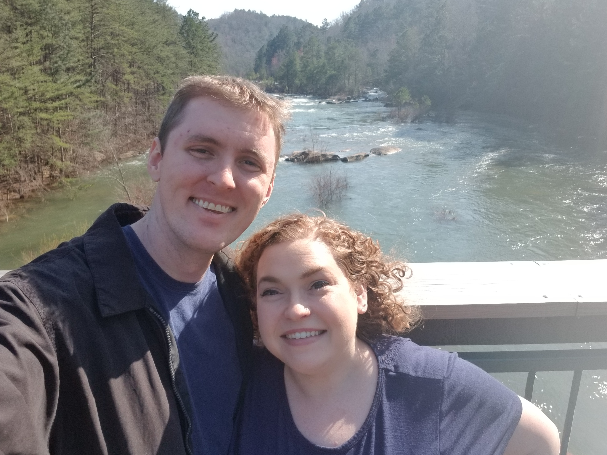

About David
David is a smart, quiet, kind, thoughtful, and handsome software engineer with the most beautiful steel blue eyes you have ever seen! He works for the University of Alabama at the Center for Advanced Public Safety (CAPS). David is a #5 on the Enneagram, meaning he is often quiet and to himself. But that doesn't mean he isn't full of insight and valuable advice! Because he is such a good listener, he often has incredibly thoughtful feedback to give.
David and his Fiancee, Ellen
David's Family
David is surrounded by people who love and admire him. His famiy would move mountains for him and love him more than words can express. Here are David's closest family members:
- Billy Sandel - David's father
- Lisa Sandel - David's Mother
- Kyle Sandel - David's brother
- Bill Sandel - David's grandfather
- Melverta Sandel - David's grandmother
- Ellen Thompson - David's devoted fiancee
David's Characteristics
David has many likes and dislikes. Let's look at his favorites and least favorites to look deeper at who he is!
David's Favorites
- Ellen - <3
- Petunia - the passive aggressive house cat/queen of the realm and ruler of everything
- Doggos - any and all doggos
- Games with friends - DnD, car soccer, Europa Universala, you name it!
- Coding
- Teaching Ellen coding
- Relaxing
- Gardening
- Any activity outdoors
- Reading
- Reddit - the black hole of the interwebs
- Candy
David's least Favorites
- Pickles
- Rude people
- Traffic
- Corporations and big business - they are all trying to steal your moneys!
- Not winning games
- Pickles
- Rude people
- Traffic
- Corporations and big business - they are all trying to steal your moneys!
- Not winning games